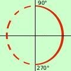
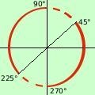
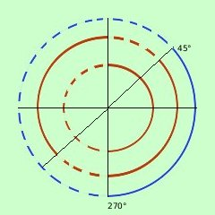
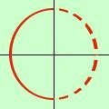
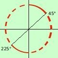
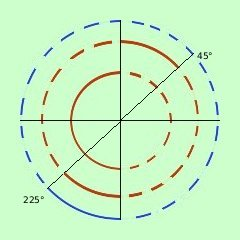

esercizio
Risolvere la disequazione
sen x - cos x < 0
Si potrebbe risolvere in modo semplice disegnando i
grafici delle due funzioni y=senx ed y=cosx e considerare i punti dove il
grafico della prima e' inferiore al grafico della seconda, ma vediamo come
risolverlo in modo "algebrico"
stavolta l'equazione associata e' di tipo gia' visto: per risolverla come equazione basterebbe dividere tutti i termini per cos x
essendo una disequazione non posso dividere immediatamente per cos x perche' non ne conosco il segno (ti ricordo che moltiplicando una disequazione per un termine negativo il verso cambia)
Allora per risolvere la disequazione distinguiamo due casi
- cos x > 0 in questo caso, dividendo per cos x, il verso della disequazione resta lo stesso
- cos x < 0 in questo caso, dividendo per cos x, cambieremo il verso alla disequazione
- primo caso
 cos x > 0
cos x > 0
| sen x |
|
cos x |
|
0 |
| ---------- |
- |
---------- |
< |
---------- |
| cos x |
|
cos x |
|
cos x |
siccome senx/cosx = tangx
cos x > 0
tang x - 1 < 0
Attenzione! Stavolta e' un sistema e dobbiamo cercare solo le soluzioni valide e anche se cercando i segni discordi otterremmo lo stesso risultato (di entrambe i casi) e' concettualmente sbagliato il considerarlo

cos x > 0
so che il coseno e' positivo tra 0° e 90° ed anche tra 270º e
360°, quindi
0° < x < 90° U 270° < x
< 360°
con U indico l'unione degli intervalli
a destra la rappresentazione grafica; il punto 0° = 360° e' escluso

tang x - 1 < 0
tang x < 1
so che la tangente e' minore di 1 se l' angolo e' compreso fra 0° 45°
ed anche tra 90° e 180° inoltre (essendo la tangente periodica di
180° fra 180° e 225° e tra 270° e 360° quindi posso
scrivere
0° < x < 45° U 90° < x
< 225° U 270° < x < 360°
a destra la rappresentazione grafica

mettiamo assieme le soluzioni e risolviamo il sistema
0°<x <90° U
270°<x<360°
0°<x <45° U
90°<x<225° U 270°<x<360°
a destra la rappresentazione grafica
Soluzione prima parte
0° < x < 45° U 270° < x
< 360°
- secondo caso
cos x < 0
| sen x |
|
cos x |
|
0 |
| ---------- |
- |
---------- |
> |
---------- |
| cos x |
|
cos x |
|
cos x |
siccome senx/cosx = tangx
cos x < 0
tang x - 1 > 0

Anche qui e' un sistema e dobbiamo cercare solo le soluzioni
valide e anche se cercando i segni discordi otterremmo lo stesso risultato (di
entrambe i casi) e' concettualmente sbagliato il considerarlo
cos x < 0
so che il coseno e' negativo tra 90°; e 270° quindi
90° < x < 270°
a destra la rappresentazione grafica;
tang x - 1 > 0

tang x > 1
so che la tangente e' maggiore di 1 se l' angolo e' compreso fra 45° e
90° e inoltre (essendo la tangente periodica di 180° fra 225° e
270°; quindi posso scrivere
45° < x < 90° U 225° < x
< 270°
a destra la rappresentazione grafica

mettiamo assieme le soluzioni e risolviamo il sistema
90° < x < 270°
45° < x < 90° U 225° < x
< 270°
a destra la rappresentazione grafica
Soluzione seconda parte
225° < x < 270°
Siccome dividiamo per cos x dobbiamo considerare a
parte il caso di cos x = 0
sen x - cos x < 0
diventa
sen x < 0 con x=90° e x = 270°
Per x=90° il seno e' positivo quindi la disequazione non e' verificata
Per x=270° il seno e' negativo quindi la disequazione e' verificata
x = 270°
Ora devo prendere sia le soluzioni del primo che del secondo sistema:
quindi
0° < x < 45° U 225° <
x < 360°
|